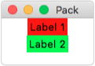
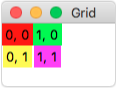

Geometrie-Manager (Anordnung)¶
Mit Hilfe des Geometrie-Managers können wir die Anordnung der Widgets im Fenster bestimmen. Die beiden wichtigsten sind Pack und Grid.
Pack¶
Beim Pack-Geometrie-Manager „packen“ wir die Widgets nacheinander in das Fenster. In unserem Beispiel verwenden wir Labels, aber das Prinzip gilt für alle Widgets. Wenn wir keine Optionen angeben, werden die Widgets untereinander gepackt und sind nur so groß wie nötig:
1 2 3 4 5 | label_1 = Label(master=fenster, text="Label 1", background="red")
label_1.pack()
label_2 = Label(master=fenster, text="Label 2", background="green")
label_2.pack()
|
Über die Optionen fill und expand können wir steuern, ob die Widgets mehr Platz bekommen als nötig. Der Parameter fill kann die Werte X, Y oder BOTH annehmen.
1 2 3 4 5 | label_1 = Label(master=fenster, text="Label 1", background="red")
label_1.pack(fill=X)
label_2 = Label(master=fenster, text="Label 2", background="green")
label_2.pack(fill=BOTH, expand=True)
|
Über den Paramter anchor legen wir fest, an welcher Seite die Widgets ausgerichtet werden. Folgende Werte sind möglich: NW, N, NE, E, SE, S, SW, W und CENTER. Die Buchstaben kommen von den englischen Namen für die Himmelsrichtungen: (N)orth, (E)ast, (S)outh und (W)est.
1 2 3 4 5 | label_1 = Label(master=fenster, text="Label 1", background="red")
label_1.pack(anchor=W)
label_2 = Label(master=fenster, text="Label 2", background="green")
label_2.pack(anchor=E)
|
Wenn wir den Widgets etwas mehr Abstand zueinander geben wollen, können wir die Paramter padx und pady verwenden. Für den Abstand innerhalb des Widgets heißen sie ipadx und ipady.
1 2 3 4 5 | label_1 = Label(master=fenster, text="Label 1", background="red")
label_1.pack(padx=10, pady=10)
label_2 = Label(master=fenster, text="Label 2", background="green")
label_2.pack(ipadx=10, ipady=10)
|
Über den side Paramter können wir die Widgets auch nebeneinander anordnen. Die möglichen Werte sind LEFT, TOP, RIGHT und BOTTOM.
1 2 3 4 5 6 7 8 | label_1 = Label(master=fenster, text="Label 1", background="red")
label_1.pack(fill=X)
label_2 = Label(master=fenster, text="Label 2", background="green")
label_2.pack(side=LEFT)
label_3 = Label(master=fenster, text="Label 3", background="yellow")
label_3.pack(side=RIGHT)
|
Grid¶
Beim Grid-Geometrie-Manager unterteilen wir das Fenster in Gedanken in Zeilen (row) und Spalten (column). Für jedes Widget können wir nun angeben, an welcher Postion auf dem Gitter es angezeigt werden soll.
1 2 3 4 5 6 7 8 9 10 11 | label_1 = Label(master=fenster, text="0, 0", background="red")
label_1.grid(column=0, row=0)
label_2 = Label(master=fenster, text="1, 0", background="green")
label_2.grid(column=1, row=0)
label_3 = Label(master=fenster, text="0, 1", background="yellow")
label_3.grid(column=0, row=1)
label_4 = Label(master=fenster, text="1, 1", background="magenta")
label_4.grid(column=1, row=1)
|
Damit sich das Gitter mit dem Fenster vergößert, können wir den Spalten und Zeilen ein relatives Gewicht (weight) zuweisen.
1 2 3 4 5 | fenster.columnconfigure(0, weight=1)
fenster.columnconfigure(1, weight=2)
fenster.rowconfigure(0, weight=1)
fenster.rowconfigure(1, weight=2)
|
Wenn die Gitterzelle größer ist als das Widget, können wir das Verhalten über den sticky Parameter steuern. Als Werte sind wieder die Himmelsrichtungen N, E, S, W und Kombinationen daraus möglich.
1 2 3 4 5 6 7 8 9 10 11 | label_1 = Label(master=fenster, text="0, 0", background="red")
label_1.grid(column=0, row=0, sticky=W)
label_2 = Label(master=fenster, text="1, 0", background="green")
label_2.grid(column=1, row=0, sticky=NE)
label_3 = Label(master=fenster, text="0, 1", background="yellow")
label_3.grid(column=0, row=1, sticky=SW)
label_4 = Label(master=fenster, text="1, 1", background="magenta")
label_4.grid(column=1, row=1, sticky=S)
|
Wenn wir gegenüberliegende Himmelsrichtungen, z.B. N und S kombinieren, wird die Zelle gestreckt.
1 2 3 4 5 6 7 8 9 10 11 | label_1 = Label(master=fenster, text="0, 0", background="red")
label_1.grid(column=0, row=0, sticky=EW)
label_2 = Label(master=fenster, text="1, 0", background="green")
label_2.grid(column=1, row=0, sticky=EW)
label_3 = Label(master=fenster, text="0, 1", background="yellow")
label_3.grid(column=0, row=1, sticky=NS)
label_4 = Label(master=fenster, text="1, 1", background="magenta")
label_4.grid(column=1, row=1, sticky=NSEW)
|
Über die Parameter columnspan bzw. rowspan können wir erreichen, das mehrere Zellen zusammengefasst werden.
1 2 3 4 5 6 7 8 | label_1 = Label(master=fenster, text="0, 0", background="red")
label_1.grid(column=0, row=0, sticky=NSEW)
label_2 = Label(master=fenster, text="1, 0", background="green")
label_2.grid(column=1, row=0, sticky=NSEW)
label_3 = Label(master=fenster, text="0,1 -> 1,1", background="yellow")
label_3.grid(column=0, row=1, sticky=NSEW, columnspan=2)
|